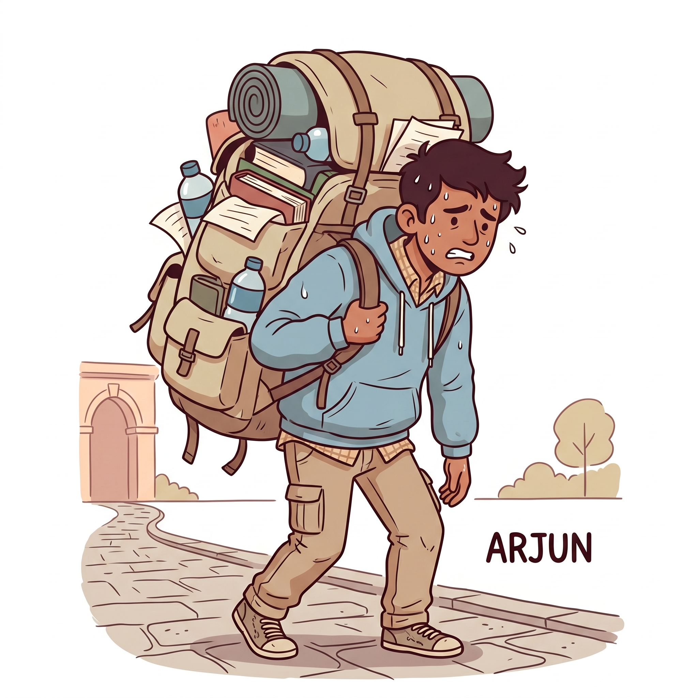
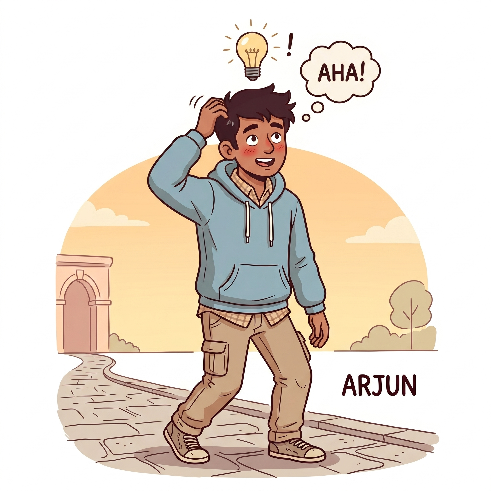
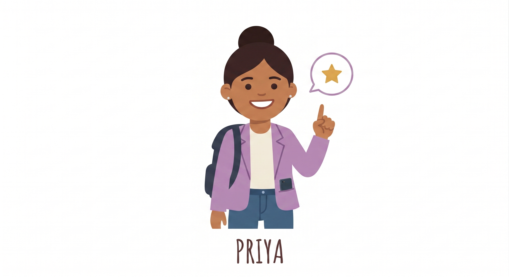

Arjun 🧳
Mumbai → Toronto · No preparation
"I'll just bring everything. Better safe than sorry."

Priya 🌟
Delhi → Toronto · Used StudenzBit
"Orientation is social. Pack light. Pack smart."
WEEK 2 · ORIENTATION DAY
Arjun packed 8kg. Priya packed 800g. One of them had back pain by 10am.
Most universities let you apply for your student ID card and access card online through the student portal, days before orientation. Priya did this on Day 5. Her card was ready for pickup on orientation morning. Arjun waited and joined a line of 500 students for 90 minutes just to get his photo taken.
1. Login to your university portal
2. Resources → Student Card Request → fill out the form, upload a professional photo → submit
3. Resources → Access Card → fill out the form (may ask for a refundable deposit — pay it) → order it
You've seen those university stock photos — student with a big backpack, walking across campus. That's not the vibe you want on Day 1. Orientation is mostly about sitting, listening, and meeting people. You need 5 things. Not 25.

Arjun 🧳
Mumbai → Toronto · No preparation
"I'll just bring everything. Better safe than sorry."
Priya 🌟
Delhi → Toronto · Used StudenzBit
"Orientation is social. Pack light. Pack smart."
Total bag weight: ~8kg

Arjun's realization.
Total bag weight: ~800g

✅ Student ID card (or confirmation email if not ready)
✅ Phone (fully charged the night before)
✅ Portable charger
✅ One notebook + pen
✅ Water bottle
✅ Small snack (granola bar, nuts)
✅ Debit card + $20 cash
✅ Photocopy of passport / study permit
✅ Screenshot of campus map (download offline — don't rely on campus Wi-Fi)
❌ Laptop (unless your department said to bring one)
❌ Original passport
❌ Multiple notebooks
❌ Rain jacket (check weather the night before — plan, don't panic-pack)
1. Know your campus location before you leave.
Don't assume orientation is at the main building. It can be split across a gym, a lecture hall, an outdoor quad, or multiple buildings. The night before, check your confirmation email, look up the exact location, and screenshot the campus map. Many campuses have weak Wi-Fi during orientation week — download the map offline so you're not standing outside trying to load Google Maps with 300 other confused students.

Saved campus map, offline.
2. Know your student number by heart.
You'll be asked for it constantly — Wi-Fi setup, forms, printers, exam registration, portals. Arjun unlocks his phone 12 times during orientation just to look it up. Priya memorized it the night before. Takes 5 minutes, saves you every single day.
3. Orientation is about people, not paperwork.
Your phone is your most important tool — keep it charged. A light bag means better posture, more energy, and you actually look like you know what you're doing.
4. Never carry your original passport unless required.
5. On clubs and societies:
Every club, student association, and society will have a booth and will pressure you to sign up on the spot. Don't. Collect their Instagram handles, go home, research each one, and enroll in the ones that actually align with your goals. Arjun signed up for 8 clubs in one afternoon, got overwhelmed with emails, and ghosted all of them. Quality over quantity.
6. Choose your circle wisely.
Orientation day puts you in a room with hundreds of students from every background. Be warm with everyone, but be intentional. The people you connect with today will shape your next 2 to 4 years. We'll go deeper on this in Blog 15, but today's the day you start paying attention.
They'll announce midterm weeks (typically Week 5–7 and Week 10–11) and the final exam period dates.
Write down whether your finals are in-class or in a separate exam hall — the venue changes and students show up at the wrong building.
⚠️ Missing an exam without a valid medical reason = 0. Not a reschedule. A zero.
After orientation, confirm: University portal → Academic Calendar → Exam Schedule
They'll tell you when YOUR specific window opens for next semester — staggered by year, Year 1 always gets the last slot.
Write the exact date and time. Popular courses fill within hours.
If a course is full, add yourself to the waitlist — people drop.
⚠️ Arjun missed his window by two days. His top 3 choices were gone.
Usually end of Week 2 — they'll mention this in the academic overview.
Your window to swap sections, add a missed course, or drop something not working.
💡 You can sit in on extra classes in Week 1–2 without being enrolled to test them before committing. Priya tested two extras. Arjun didn't know this was allowed.
Usually Week 6–8 — advisors say this quickly, so listen carefully.
Before this date: course disappears cleanly from your record — no trace.
After this date: a "W" (Withdrawal) appears on your transcript; at some universities it becomes a "WF" which damages your GPA.
🌍 International students: dropping below full-time (usually 60% course load) can put your study permit at risk. Always check with the International Student Office before dropping anything.
| Break | Typical Timing | Duration |
|---|---|---|
| 🍂 Fall Reading Week | Mid-October or early November | 1 week |
| ❄️ Winter Break | Late December → early January | ~2–3 weeks |
| 🌸 Spring Reading Week | Mid-February | 1 week |
Winter break is the longest — if flying home to India, book in Sept–Oct. December flights from Toronto spike 3–4x by November.
💡 Priya booked in October for $820. Arjun booked in November for $1,640. Same seat. Same flight.
Reading weeks ≠ holidays. Midterms often land the week right after.
| Grade | % | What It Actually Means |
|---|---|---|
| D | 50–59% | Technically passing — but may not count toward your degree |
| C | 60–69% | Minimum passing for most core courses |
| B | 70–79% | Required minimum for many CS/Engineering programs to advance |
| GPA 2.0 | ~60% avg | Minimum to avoid academic probation |
Many programs have a prerequisite grade rule — e.g. C+ in first-year Math to register for second-year Math.
Academic probation can affect your study permit renewal.
⚠️ Arjun assumed 50% = passing everywhere. Scraped through Calculus with a D. Couldn't register for second-year math. Lost an entire semester.
The difference between Priya and Arjun isn't intelligence. It's notes.
Everything Priya had in her bag. Tested, student-approved, budget-conscious.
Everyday campus backpack — padded laptop sleeve, water bottle pocket, built for 4 years of daily use.
View on Amazon →Compact student backpack — smaller profile, fits 15" laptop, lighter carry for orientation and low-load days.
View on Amazon →Small and slim — refill anywhere on campus. Bottled water costs $1.99–$2.50 per bottle in Canada. A reusable bottle pays for itself on Day 3.
View on Amazon →Wide-ruled, sturdy. Pick one good multi-subject notebook and use it for the whole semester — don't buy one per course.
View on Amazon →College-ruled, multi-section. Ideal for keeping everything organized in one book.
View on Amazon →StudenzBit favourite. Track your schedule, assignments, and deadlines. Writing things down helps you retain them.
View on Amazon →Most Canadian universities require blue or black ink in exams. Black writes smoother and scans cleaner. Always confirm with your professor. Keep at least 2 in your bag.
View on Amazon →StudenzBit favourite. 0.5mm — perfect for OMR bubble sheets, rough work, and diagrams. Invest in one good mechanical pencil and don't lose it. It will last your entire university life.
View on Amazon →More picks coming → Blog 10 covers the full tech and gear list.